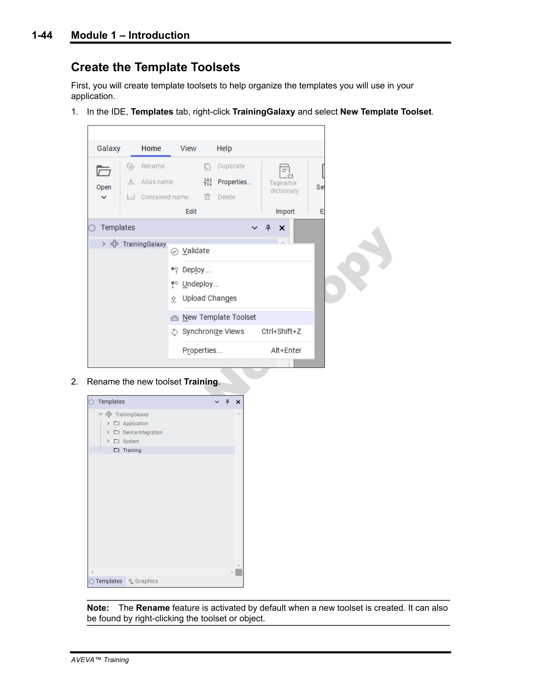
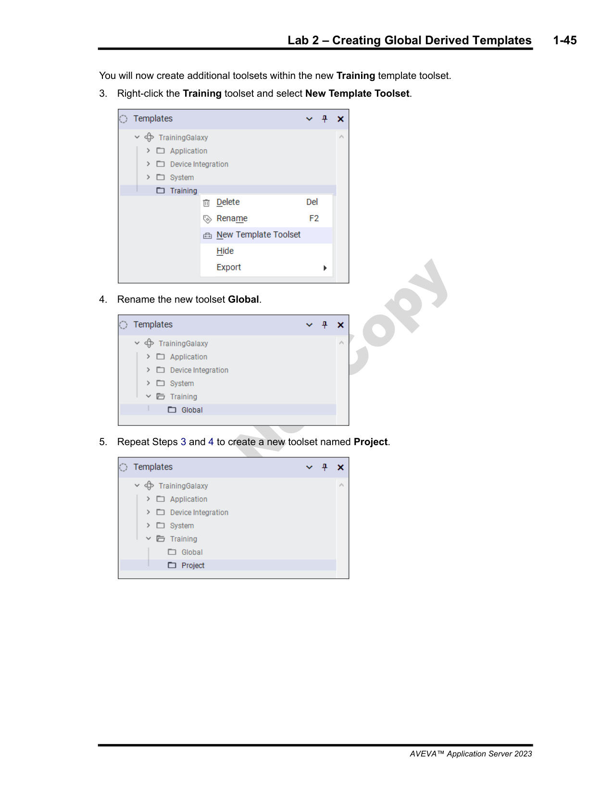
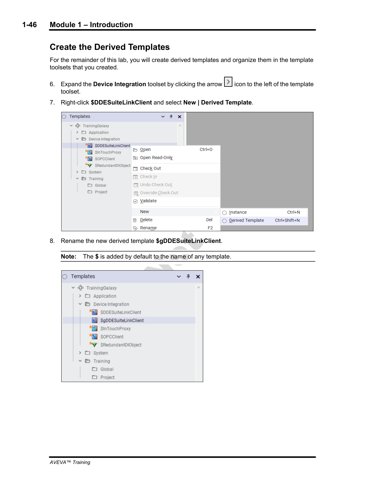
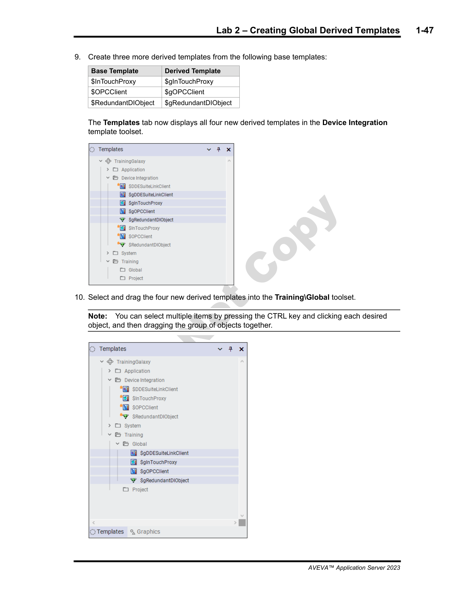
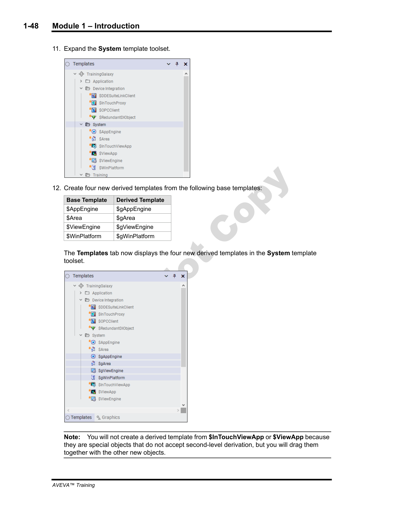
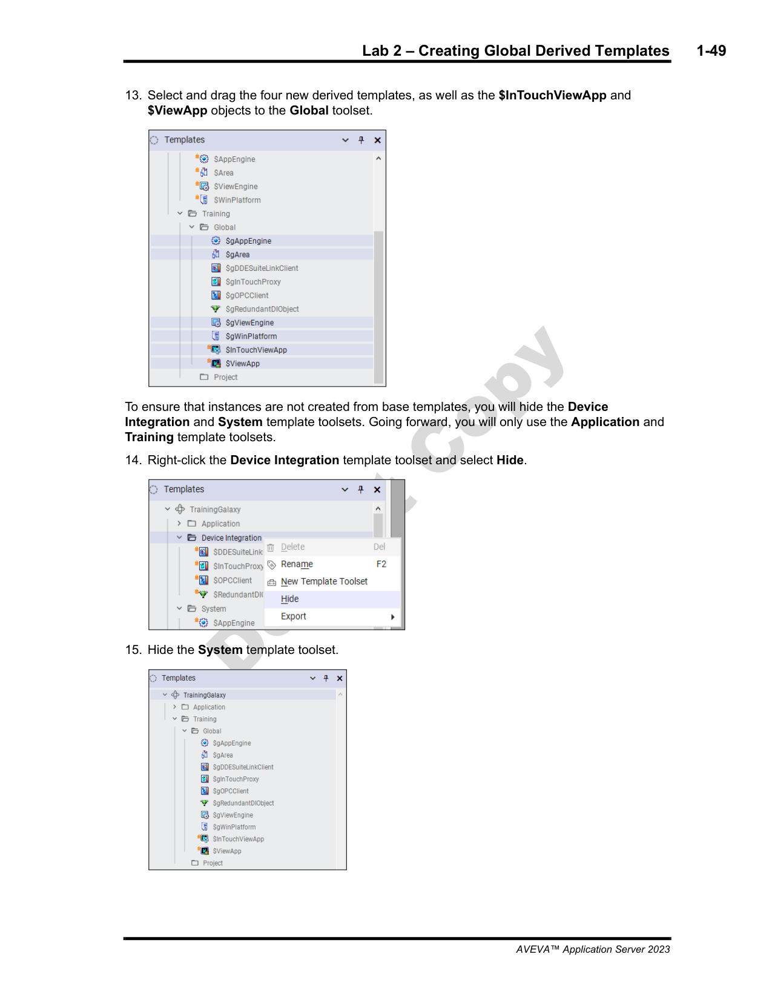
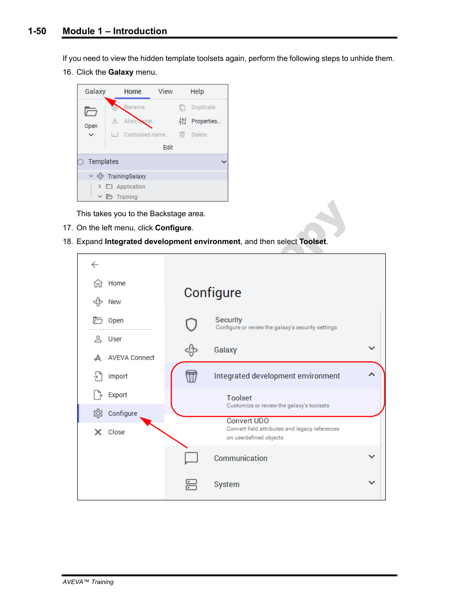
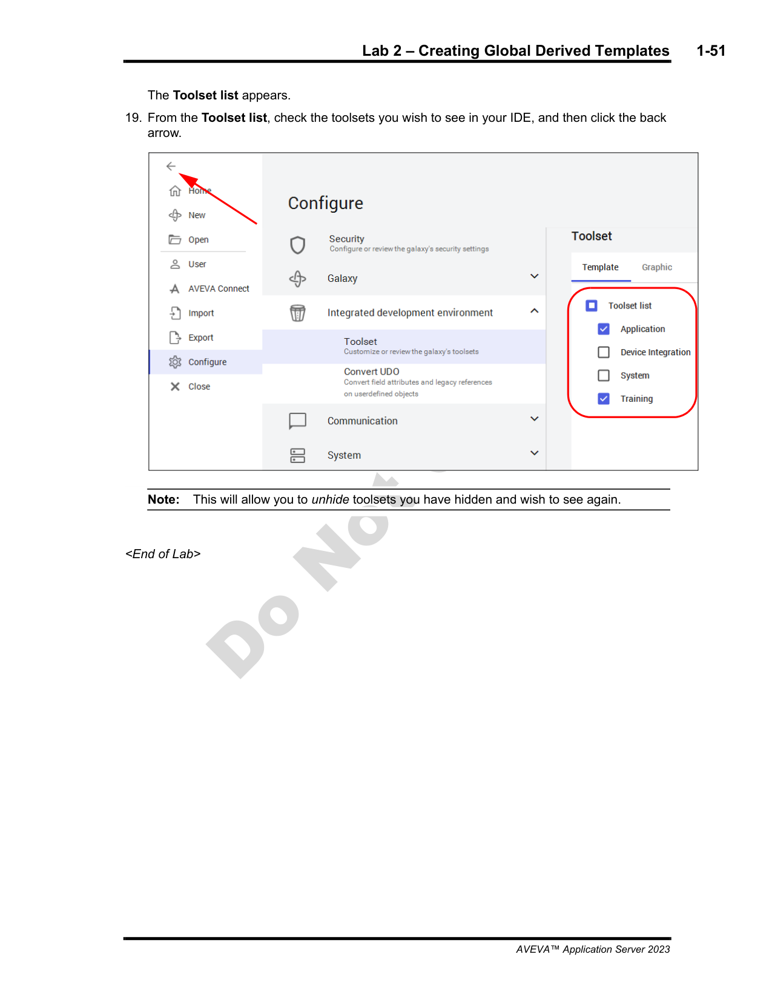

What are Template Toolsets?
Template toolsets are organizational containers in the Galaxy Browser that group related templates together. They are like folders for your templates — they have no runtime behavior, but they keep the IDE tidy and make it easier for developers to find the templates they need.
Steps 1-2: Create the “Training” Template Toolset
Reference: page 1-44
In the Galaxy Browser, right-click the TrainingGalaxy node
Select New Template Toolset
The new toolset appears in the hierarchy — rename it to “Training”

Steps 1-2: Right-click TrainingGalaxy → New Template Toolset → rename to “Training” (page 1-44)
Naming Convention: The training manual names this toolset “Training” because it will hold all the global derived templates used throughout the course. In a real project, you might name it after your organization or project.
Steps 3-5: Create “Global” and “Project” Sub-Toolsets
Reference: page 1-45
Right-click the new Training toolset
Select New Template Toolset and name it “Global”
Repeat to create another sub-toolset named “Project”
The Training toolset now has two child toolsets: Global (for templates shared across all projects) and Project (for project-specific templates).

Steps 3-5: Create “Global” and “Project” sub-toolsets under Training (page 1-45)
Step 6: Derive $gDDESuiteLinkClient from Device Integration
Reference: page 1-46
Now begin creating global derived templates. These are templates prefixed with $g to indicate they are global. The first one comes from the Device Integration toolset:
In the Galaxy Browser, navigate to the Device Integration toolset
Right-click $DDESuiteLinkClient
Select New Derived Template
Rename the new template to $gDDESuiteLinkClient

Step 6: Right-click $DDESuiteLinkClient → New Derived Template → rename to $gDDESuiteLinkClient (page 1-46)
The $g Prefix: Derived templates that are meant to be shared across the entire Galaxy (not just one project) are prefixed with $g. This is a naming convention that signals these are “global” templates. For example, $gDDESuiteLinkClient is a global version of the base $DDESuiteLinkClient template.
Step 7: Create More Device Integration Derived Templates
Reference: page 1-47
Continue creating global derived templates for the remaining Device Integration base templates:
Base Template
Derived Template
Purpose
$InTouchProxy
$gInTouchProxy
Global InTouch communication client
$OPCClient
$gOPCClient
Global OPC communication client
$RedundantDIObject
$gRedundantDIObject
Global redundant device integration object
After creating all four DI derived templates ($gDDESuiteLinkClient, $gInTouchProxy, $gOPCClient, $gRedundantDIObject), drag all four to Training\Global.

Step 7: Create $gInTouchProxy, $gOPCClient, $gRedundantDIObject, then drag all 4 DI templates to Training\Global (page 1-47)
Don't Forget to Drag: Simply creating the derived templates is not enough — you must drag them into the appropriate toolset (Training\Global) to organize them properly. Templates left at the root level clutter the Galaxy Browser.
Step 8: Create System Base Template Derived Templates
Reference: page 1-48
Next, create global derived templates from the System toolset base templates:
Base Template
Derived Template
Purpose
$AppEngine
$gAppEngine
Global application engine
$Area
$gArea
Global area object for organizing equipment
$ViewEngine
$gViewEngine
Global view engine for InTouch integration
$WinPlatform
$gWinPlatform
Global Windows platform configuration
Use the same process: right-click the base template, select New Derived Template, rename with the $g prefix, then drag the new template into Training\Global.

Step 8: Create $gAppEngine, $gArea, $gViewEngine, $gWinPlatform from System base templates (page 1-48)
Steps 9-10: Organize Remaining Templates and Hide Toolsets
Reference: page 1-49
Finish organizing the Galaxy Browser:
Drag $InTouchViewApp and $ViewApp into the Training\Global toolset
Hide the Device Integration toolset (right-click → Hide)
Hide the System toolset (right-click → Hide)
Hiding toolsets removes them from view in the Galaxy Browser but does not delete them. The base templates still exist — you just won't see them cluttering the browser while you work. This is especially useful when you have many built-in template categories.

Steps 9-10: Drag $InTouchViewApp/$ViewApp to Global, hide Device Integration and System toolsets (page 1-49)
Steps 11-12: Configure IDE Toolset Visibility
Reference: page 1-50
To manage which toolsets are visible in the IDE, use the Galaxy configuration settings:
In the IDE menu, go to Galaxy → Configure → IDE → Toolset
This opens the toolset visibility configuration dialog

Steps 11-12: Galaxy → Configure → IDE → Toolset to manage visibility (page 1-50)
Why Hide Toolsets? Hiding toolsets that you don't actively use (like Device Integration and System) simplifies the Galaxy Browser and reduces clutter. Developers see only the toolsets relevant to their work. The Training toolset with Global and Project sub-toolsets becomes the primary workspace.
Steps 13-15: Select Visible Toolsets and Complete Lab 2
Reference: page 1-51
In the toolset visibility dialog:
Check the Application toolset (this should remain visible)
Check the Training toolset (your custom toolsets)
Uncheck all other toolsets you want to hide
Click OK to apply the changes
The Galaxy Browser now shows a clean, organized view with only the Application and Training toolsets visible. All your global derived templates are neatly organized under Training\Global.

Steps 13-15: Select visible toolsets (Application + Training checked), click OK — End of Lab 2 (page 1-51)
Lab 2 Complete — What You Accomplished:
Created a Training template toolset with Global and Project sub-toolsets
Derived 4 System templates: $gAppEngine, $gArea, $gViewEngine, $gWinPlatform
Organized all derived templates into the Training\Global toolset
Hid unused base toolsets to simplify the IDE view
These global derived templates will serve as the foundation for all project work in subsequent modules.
Part B: Section 6 — Encrypted Communication
Reference: Module 1, Section 6 (pages 1-53 to 1-56)
Application Server supports end-to-end encrypted communication between the Galaxy Repository (GR) and the platform nodes. This is critical for industrial environments where security is paramount.
Why Encryption Matters
The Problem: In a plant network, control commands (start, stop, setpoint changes) travel between the GR and platform nodes. Without encryption, an attacker on the network could intercept or modify these commands — with potentially catastrophic consequences.
Certificate-Based Security
Aveva uses X.509 certificates for authentication and encryption. Here's how it works:
Concept
Description
Certificate Authority (CA)
An internal or trusted CA issues certificates to GR and platform nodes. Each node has its own identity certificate.
Mutual Authentication
Both the GR and platform verify each other's certificates before establishing communication. Neither side can spoof the other.
TLS Encryption
All data in transit is encrypted using TLS (Transport Layer Security). This prevents eavesdropping and tampering.
Certificate Rotation
Certificates have expiration dates and must be renewed. The manual recommends planning a rotation schedule.
Configuration at the Platform Level
Encrypted communication is configured at the platform level in the IDE. Each $WinPlatform object can be configured to require encrypted communication with the GR. Key settings include:
Enable Encryption: Toggle to require TLS for all GR↔Platform communication
Certificate Store: Path to the certificate store on the platform node
Trusted CA Certificate: The CA certificate used to validate the GR's identity
Client Certificate: The platform's own identity certificate presented to the GR
Important: Once encrypted communication is enabled, ALL communication between GR and that platform must be encrypted. You cannot mix encrypted and unencrypted connections to the same platform. Ensure certificates are valid before enabling encryption — expired certificates will break deployment.
Encryption Scope: The encryption covers:
Deployment commands from GR to platform
Attribute value updates (I/O references)
Alarm notifications
Script execution results
It does NOT cover communication between third-party clients (like InTouch) and the platform — those use their own security mechanisms.
Certificate Management Best Practices
Use an internal CA for production environments rather than public CAs
Set appropriate expiration periods — typically 1-3 years
Document certificate locations on each node for renewal planning
Test certificate validation before enabling encryption in production
Back up certificates — losing the GR's certificate means losing secure communication
When to Use Encryption: The manual recommends enabling encrypted communication for any deployment that spans untrusted network segments (e.g., plant floor to control room) or where regulatory compliance requires it (e.g., IEC 62443, NERC CIP). For a single machine with local GR and platform, encryption adds overhead with minimal security benefit.
Part C: Section 7 — System Requirements and Licensing
Reference: Module 1, Section 7 (pages 1-57 to 1-59)
Before deploying Application Server in production, you need to understand the system roles, hardware/software requirements, and licensing model.
System Roles
Application Server has three distinct system roles, each running on separate (or the same) machine:
Role
Software
What It Does
Galaxy Repository (GR)
AVEVA Application Server (Galaxy Repository)
Stores the Galaxy database, handles deployment, manages object lifecycle. The “brain” of the system.
Platform
AVEVA Application Server (Platform Runtime)
Runs on the target machine. Executes deployed objects, handles I/O, runs scripts, sends alarms. The “muscle.”
IDE
AVEVA Application Server (IDE)
Development environment. Used to design objects, configure templates, manage the Galaxy. The “workbench.”
Key Rule: In a small system, all three roles can run on the same machine. In production, the GR is typically on a dedicated server, platforms are on the control network, and the IDE is on engineering workstations. The manual recommends separating GR and platform onto different machines for reliability.
Software Requirements
Component
Requirement
Operating System
Windows Server 2016/2019/2022 or Windows 10/11 (for IDE only)
.NET Framework
.NET Framework 4.7.2 or later (required for all components)
SQL Server
Microsoft SQL Server 2016/2017/2019 (Express edition supported for development)
AVEVA Application Server
Version 2023 or compatible — GR, Platform, and IDE components
Wonderware System Platform
Required for full functionality (runtime, alarming, historization)
Hardware Requirements
Component
Minimum
Recommended (Production)
CPU
Dual-core 2 GHz
Quad-core 3+ GHz
RAM
4 GB
8-16 GB (depending on object count)
Disk
10 GB free
50+ GB on SSD (for GR database)
Network
100 Mbps
1 Gbps (dedicated VLAN recommended)
Sizing Tip: The manual notes that GR disk usage grows with Galaxy complexity. A Galaxy with thousands of objects and extensive scripting will need more RAM and faster disks than a simple monitoring system.
Licensing Model
Aveva uses a per-node licensing model:
License Type
What It Covers
GR License
One per Galaxy Repository server. Required to host the Galaxy database.
Platform License
One per platform node. Each deployed platform requires its own license.
IDE License
One per development workstation. Typically included with the GR license.
License Gotcha: The GR license is tied to a specific machine. If you move the GR to a new server, you need a new license activation. The platform licenses are also node-locked — they are bound to the hardware of the platform machine.
Network User Account Requirements
Application Server uses Windows network user accounts for authentication. The manual specifies these requirements:
Service Account: The Galaxy Repository runs under a Windows service account. This account must have:
Local administrator rights on the GR server
Access to the SQL Server database
Read/write access to the Galaxy share folder
Platform Service Account: The platform runtime also runs under a service account with local administrator rights on the platform machine
IDE User Account: The developer using the IDE must have:
Access to the Galaxy share folder
Appropriate Galaxy user permissions (configured in Galaxy Administration)
Domain vs. Workgroup: In production environments, all nodes should be on the same Active Directory domain. This simplifies user account management and ensures consistent authentication. Workgroup deployments are supported for development/testing but are harder to manage at scale.
Security Note: The manual emphasizes using least-privilege accounts where possible. While local admin is required for the service accounts, the actual Galaxy user permissions can be restricted per user/group using Galaxy Administration tools.
Part D: Module 1 Summary
What We Covered
Module 1 laid the complete foundation for working with AVEVA Application Server. Here's a recap of all seven sections and two labs:
#
Topic
Key Concept
§2
What is Application Server?
System Platform = GR + Platform + IDE. Built on ArchestrA technology.
§3
The Galaxy
A Galaxy is the entire application universe — objects, databases, computers, policies.
§4
The IDE
Development environment with Galaxy Browser, Object Editor, Object Viewer.
§5
Automation Objects
$Root, $UserDefined, $WinPlatform, $Galaxy — the object hierarchy.
☐ Templates define attributes, logic, and configuration for instances
☐ Derived templates inherit from parent templates — changes propagate down
☐ Global derived templates (prefixed $g) are shared across the entire Galaxy
☐ Template toolsets organize templates into logical groups (like folders)
☐ Deployment is initiated from IDE but executed by GR to the platform
☐ Encrypted communication uses certificate-based TLS between GR and platforms
☐ Licensing is per-node: separate licenses for GR, Platform, and IDE
☐ Windows service accounts are required for GR and Platform runtime
Final Quiz — Module 1
Comprehensive Quiz: Module 1 (Lessons 1-4)
Q1: In Lab 2, what two sub-toolsets did you create under the “Training” template toolset?
Click to reveal answer
“Global” and “Project” sub-toolsets. Global holds templates shared across all projects; Project holds project-specific templates.
Q2: What naming convention is used for global derived templates, and what does the prefix signify?
Click to reveal answer
Global derived templates use the $g prefix (e.g., $gWinPlatform). This signifies they are meant to be shared across the entire Galaxy rather than being project-specific.
Q3: You derived $gDDESuiteLinkClient from which base template?
Click to reveal answer
It was derived from the $DDESuiteLinkClient base template in the Device Integration toolset.
Q4: After creating global derived templates, where did you drag them in the Galaxy Browser?
Click to reveal answer
Into the Training\Global toolset, to keep them organized and easily accessible.
Q5: How do you hide a toolset from the Galaxy Browser, and does hiding delete it?
Click to reveal answer
Right-click the toolset and select Hide. No, hiding does NOT delete the toolset or its contents — it just removes it from view. You can unhide it later via Galaxy → Configure → IDE → Toolset.
Q6: What security mechanism does Application Server use for encrypted communication between GR and platform nodes?
Click to reveal answer
Certificate-based TLS (Transport Layer Security). Each node has an X.509 certificate for mutual authentication, and all data in transit is encrypted using TLS.
Q7: In Application Server's licensing model, how are licenses structured?
Click to reveal answer
Per-node licensing: the GR server needs one license, each platform node needs its own license, and the IDE typically uses the GR license. Licenses are node-locked to specific hardware.
Click each answer to reveal it.
Key Takeaways
Template toolsets organize derived templates into logical groups — use Global for shared templates and Project for project-specific ones.
Global derived templates (prefixed with $g) are created from base templates in the Device Integration and System toolsets and shared across the entire Galaxy.
Hiding toolsets simplifies the Galaxy Browser without deleting anything — unhide via Galaxy → Configure → IDE → Toolset.
Encrypted communication uses certificate-based TLS between GR and platforms — enable it for security-critical environments.
System requirements are per-node: GR, Platform, and IDE each have distinct hardware and licensing needs.
Service accounts are required for GR and Platform runtime — plan these before installation.